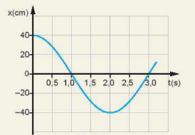

Hình bên là đồ thị dao động điều hòa của một vật. Hãy xác định:
a) Biên độ, chu kì, tần số của dao động, tần số góc.
b) Trạng thái ban đầu của vật.
c) Trạng thái của vật ở thời điểm $t = 2$ s.
d) Độ dịch chuyển của vật ở thời điểm $t = 1$ s, $t = 2$ s.
e) Quãng đường vật đi được sau khoảng thời gian 27 s kể từ lúc bắt đầu dao động.